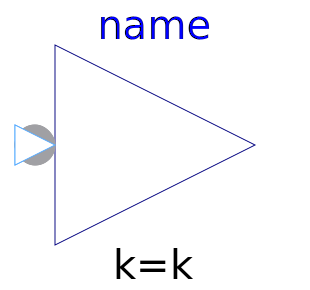
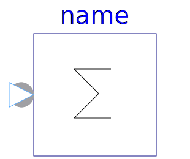
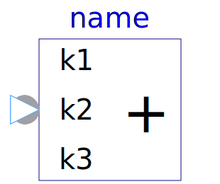
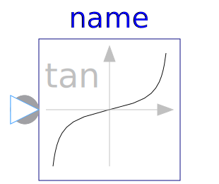
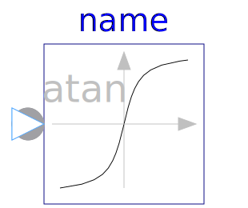
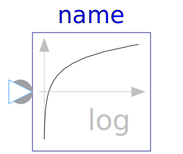
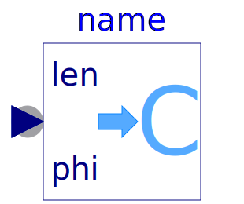
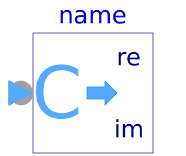
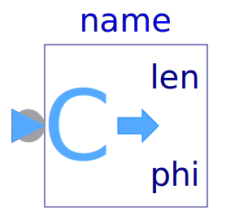

This package contains basic mathematical operations, such as summation and multiplication, and basic mathematical functions, such as sqrt and sin, as input/output blocks. All blocks of this library can be either connected with continuous blocks or with sampled-data blocks.
| Name | Description |
|---|---|
| Output is equal to the conjugate complex input signal | |
|  Gain | Output the product of a gain value with the input signal |
|  Sum | Output the sum of the elements of the input vector |
| Output difference between commanded input 1 and feedback input 2 | |
| Output the sum of the two inputs | |
|  Add3 | Output the sum of the three inputs |
| Output product of the two inputs | |
| Output first input divided by second input | |
| Output the square root of the input (= principal square root of complex number) | |
| Output the sine of the input | |
| Output the cosine of the input | |
|  Tan | Output the tangent of the input |
| Output the arc sine of the input | |
| Output the arc cosine of the input | |
|  Atan | Output the arc tangent of the input |
| Output the hyperbolic sine of the input | |
| Output the hyperbolic cosine of the input | |
| Output the hyperbolic tangent of the input | |
| Output the exponential (base e) of the input | |
|  Log | Output the natural (base e) logarithm of the input (input <> '0' required) |
| Converts Cartesian representation to complex | |
|  PolarToComplex | Converts polar representation to complex |
|  ComplexToReal | Converts complex to Cartesian representation |
|  ComplexToPolar | Converts complex to polar representation |
| Calculate quantities to plot Bode diagram | |
| Complex Transfer Function |